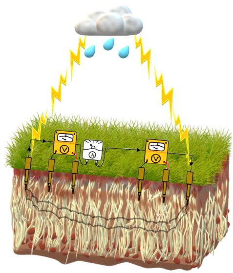
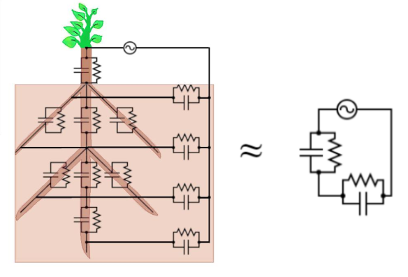
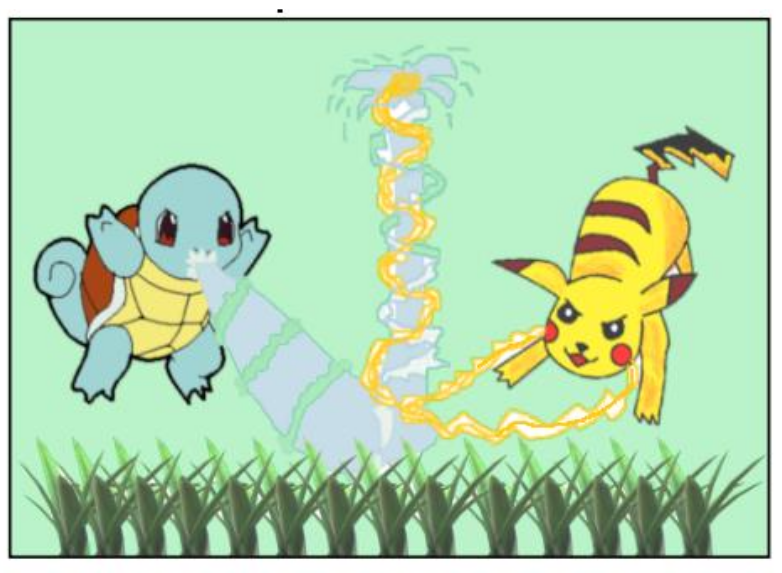

E-root Overview
Introduction
The E-root project, funded by FNRS Belgium, was a pioneering endeavor from 2016 to 2020 in the field of plant-root-soil interactions, spearheaded by three distinguished experts: Sarah Gare, Mathieu Javaux, and Frederic Nguyen. Under their guidance, two dedicated Ph.D. students, Sathyanarayan Rao and Solomon Ehosioke, embarked on an ambitious journey to unlock the secrets of the electrical signatures of plant roots in soil.
Electrical Properties of roots
In simple terms, the electrical properties of roots are essential because they help us understand how plants interact with the soil and how they take up water and nutrients. This knowledge is crucial for sustainable agriculture and food production. Traditional methods of studying soil and roots have limitations in capturing the dynamic and complex patterns in the root zone. Geophysical methods, like electrical measurements, offer a noninvasive way to study the root system's distribution and its impact on soil conditions. These methods can help farmers improve irrigation efficiency, map soil properties for precision agriculture, and study fundamental interactions between plants and the environment.
E-root Achievements
We're thrilled to share some groundbreaking achievements from the E-Root project, where we've been delving deep into the fascinating world of soil-root electrical interaction. Our efforts have led to some exciting milestones that promise to revolutionize our understanding of plant roots and their electric signatures.
The first major breakthrough came in the form of a sophisticated soil-root finite element model. This powerful tool has the ability to simulate both electric and water flow equations, thanks to the ingenious combination of state-of-the-art models like R-SWMS, C-Plantbox, GMSH, EIDORS, and others. This coupled model enables us to explore the electrical signatures of various root architectures and conduct virtual geo-electric measurements. The applications of this model extend beyond merely understanding root electrical properties; it can also optimize injection schemes for geo-electric methods, such as Electrical Resistivity Tomography on cropped soils. This opens up a whole new realm of possibilities for precision agriculture and environmental monitoring. Please see the publication (Rao et al. Vadose Zone Journal, 2019)
But that's not all: we didn't stop there! The second achievement of the E-Root project involves pioneering experiments at the single root segment scale. These experiments aim to quantify the induced polarization signatures of plant roots, an essential aspect of developing non-invasive electrical monitoring techniques. Understanding root processes like nutrient or water uptake and root growth without disturbing the natural environment is crucial, and our novel experiments have paved the way for significant advancements in this area.(Ehosioke et al. Vadose Zone Journal, 2023)
Throughout the project, our team has honed its expertise in modeling soil-root systems at different scales – from individual plants to vast fields. This includes mastering electric and water processes and setting up experiments to characterize plant electrical properties. The knowledge gained is not only vital for the success of our project but also holds immense promise for future studies in the field of plant-root interactions.